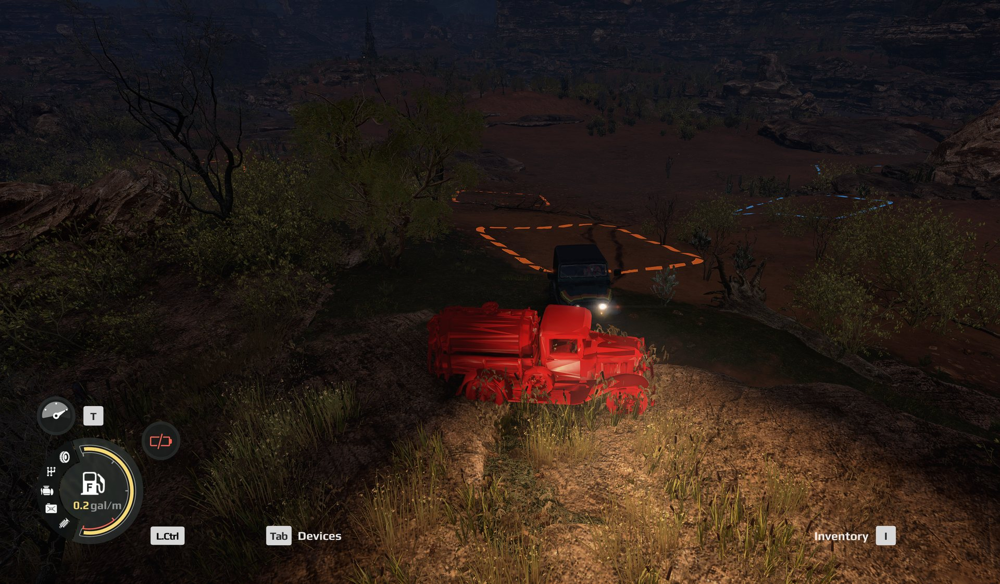
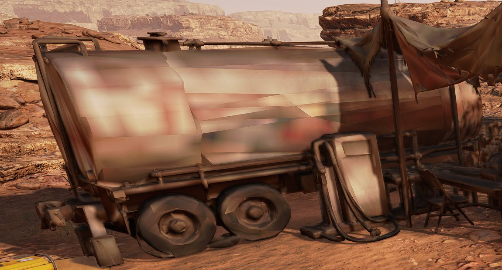
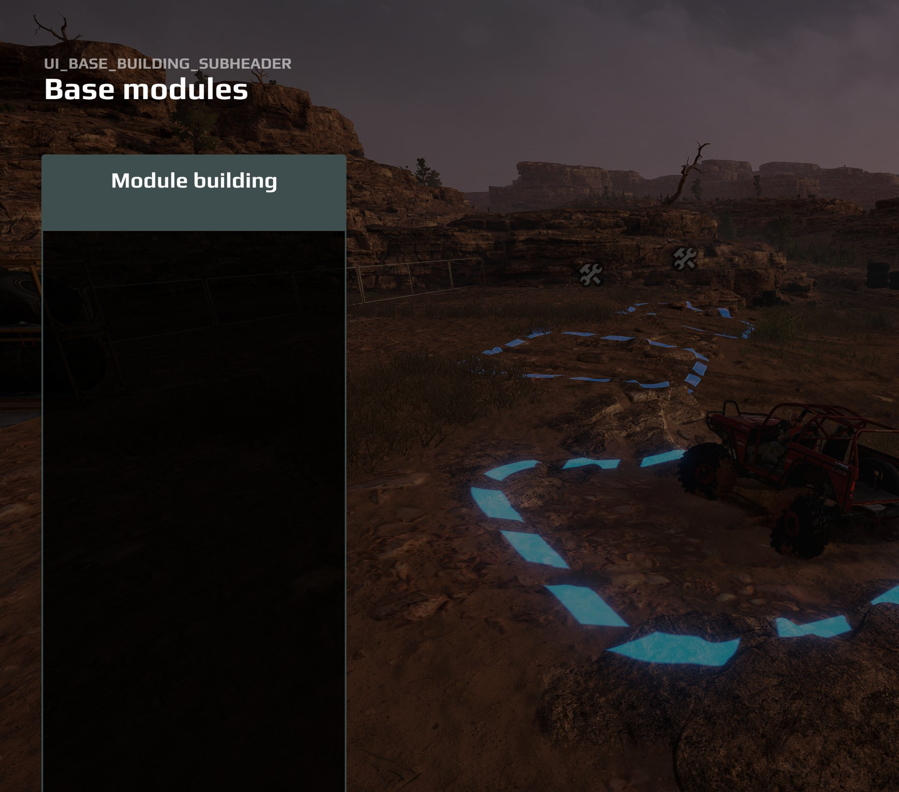
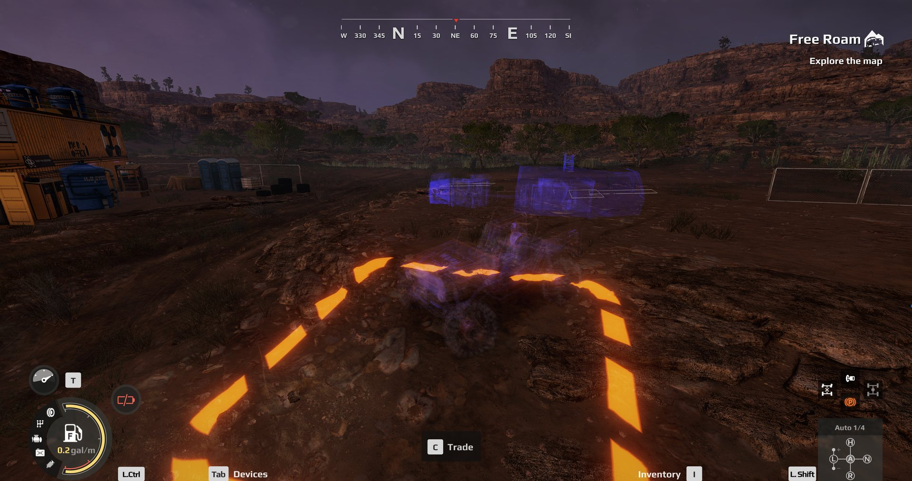

Custom FOB modules#
A custom FOB module is a base module the player can buy and build at a deploy zone, like the vanilla repair station or workshop, but defined by you: its name, its price, what it does, what it looks like and the pictures in the store.
This page is the whole process, start to finish, in the order you do it. The field-by-field reference is Module descriptor reference, and each vanilla module has its own page in Appendix A with its settings, models and art slots. Copy from those pages; this one tells you when.
Where this comes from
Everything written here comes from Saber’s documentation or from modules built and tested in game in October 2026. A few parts are still unknown, and they are listed at the end under What is not known yet rather than guessed at.
What a custom module is#
A module is one JSON file named BaseUpgradeDesc, shipped inside a pak named
BaseUpgradeDesc_<identifier>.pak in Documents\My Games\Expeditions\Media\Mods\.
The smallest working modules contain nothing else, because they use the game’s own
models. A module with its own look also carries models, textures and store art.
The file has three parts at the top: SslType, SslValue (every field you set)
and name (the module’s identifier). Two fields inside SslValue decide almost
everything:
zonePropertydecides what the module does: hold goods, sell fuel, craft, launch drones. Its type is chosen from a fixed list.- the four model fields decide what it looks like when built.
A module needs no work on the map. Saber’s documentation says a custom module
is available “in the same zones as the original ones”: any deploy zone set up
for base modules will offer it. Those zones are the map maker’s job, and each one
is a pair, a placement zone and an interaction zone, listed in the deploy zone’s
fobModulesZones. See Deploy zones and FOBs.
First decision: where the model comes from#
There are three ways to give a module its look. Choose before you start, because the choice decides what happens when a player sells the module.
| Model source | Effort | Disappears from the map when sold | |
|---|---|---|---|
| 1. Vanilla, as is | point the four model fields at the game’s own models | none | yes, like any vanilla module |
| 2. Vanilla, recoloured | the vanilla shape in another colour, shipped in your mod | one command | no |
| 3. Fully custom | your own 3D model, for example made in Meshy | an afternoon, following the recipe below | no |
Only option 1 vanishes when sold
A module whose model comes from your mod, recoloured or fully custom, leaves that model standing on the map after the player sells it. The sale itself completes normally: the record is removed, the slot is freed and can be built on again, and the refund is paid. Only the model stays.
This was tested with a recolour whose geometry is byte-identical to the vanilla mesh, and the model still stayed, so it is not about how the model was built. Seven fixes were tried and none worked. Saber ended support for Expeditions in September 2026, so it will not be patched. Treat it as permanent and tell your players.
Step 1. Decide what it does#
The zoneProperty type is the module’s function. Not every type works for a
mod. Each module page in Appendix A opens with the verdict for its type; in
short:
| Works for a mod, tested in game | Broken for a mod | Not yet tested |
|---|---|---|
storage-type modules (ZonePropertyFobModuleStorage): a fuel station with one fuel slot, a repair station, a warehouse, an essentials storage |
generator (ZonePropertyGenerator): empties the module store and freezes the game on exit to headquarters |
none left |
workshop (ZonePropertyWorkshop) |
intelligence center (AntennaUpgradeDesc): builds and sells, but never reveals anything |
|
cargo drone (ZonePropertyDroneDelivery) |
||
service station (ZonePropertyServiceStation) |
||
helipad (ZonePropertyHelicopter) |
||
expanded parking (ZonePropertyParking) |
||
tow truck (ZonePropertyTowTruck) |
Start from a type that works, and copy the vanilla module you are imitating. Open its page in Appendix A and take its settings as they are, then change one value at a time. A module that is cloned from the wrong vanilla module carries the wrong behaviour with it.
A repair-station-like module must copy the repair station, not the gas station
A module cloned from the gas station keeps the fuel-pump icons and has no
wheels slot. Copy the vanilla repair station’s settings instead:
alwaysSpawn true, chance 1.0 and tradeFromTruckToZone true on the
parts slot, a wheels slot, and the repair-station icons. The full table is on
the Repair station page.
A few behaviours are fixed by the game and cannot be changed by a mod:
- The service station’s +20% armor is a game-wide value compiled into the game. A custom service station can differ only in price, models and art. See Service station.
- The workshop is refilled only by recycling. A truck cannot hand it spare
parts; the game answers “Can’t be transferred”. A custom workshop may start
stocked through
repairsInitialAmount. See Workshop.
isInteractive must match the type, following Saber’s table: true for storage,
parking, workshop and drone delivery; false for the service station, the tow
truck and the intelligence center. The module checker flags a mismatch.
Slot chance is 0 to 1
chance on a ConsumablesSlot is a probability from 0 to 1, not a
percentage. The vanilla repair station uses 1.0.
Step 2. Create the descriptor#
There are two ways to make the file.
In the editor. Click EXP MODs creation on the toolbar (a gold shield
with a black star, fourth from the right end). In its dialog choose
File > New Mod > Base Module, fill in the name field and pick the class
BaseUpgradeDesc, then set the properties and File > Save. The file lands in
Media\Mods\BaseUpgradeDesc_<name>\BaseUpgradeDesc.
The first save can fail
Saber documents that the first save may say “Can’t open file” because the
editor does not create Media\Mods itself. Create the folder by hand and
save again.
Saber’s rule for name is Latin letters, digits and underscores, no spaces.
Some modules tested in game do have spaces in their identifier, but Saber’s rule
is the safe one.
With the toolkit. make_fob_module.py writes a descriptor for any of the
fourteen module types straight from the engine’s own schema, with every field at
its documented default. It refuses fields the schema does not declare. See
The toolkit.
python make_fob_module.py --list
python make_fob_module.py WORKSHOP "My_Workshop" --uiname "My Workshop" --desc "..." --cost 20000
A schema-valid descriptor is not proof of a working module. The tool flags the types known to break, and the game is still the test.
Give it an identity no other mod uses#
moduleId is the module’s identity. It is not at the top of the file; it sits
at SslValue.zoneProperty.moduleId.
Reusing an id another mod holds empties the whole Base modules panel
If two mods share a moduleId, the Base modules panel comes up completely
blank with the raw key UI_BASE_BUILDING_SUBHEADER as its heading. No
crash and nothing in the log.
Never clone a descriptor and keep its moduleId. Two shapes are known to
work: an id of your own, such as your mod’s name, or no moduleId at all.
Reusing a vanilla id such as DOUBLE_STOCK has worked for weeks in testing,
but it shares identity with the stock module and is not recommended.
Saber’s documentation says moduleId should equal the module’s name. A
unique id of your own also works, tested in game.
Name, text and price#
Set uiName (the name in the store) and uiDesc (the paragraph on the card).
If nothing on the built module shows what it does, as with a service station,
say in uiDesc what the player does.
Set cost (the build price) and sellPrice (the refund). Look at what the
vanilla module that does the same job costs, and price yours against it.
Every vanilla module refunds 90% of its cost. These are the vanilla prices, read
from the running game:
| Module | cost |
sellPrice |
|---|---|---|
| Gas station | 50,000 | 45,000 |
| Cargo drone | 50,000 | 45,000 |
| Helipad | 40,000 | 36,000 |
| Tow truck | 30,000 | 27,000 |
| Workshop | 20,000 | 18,000 |
| Repair station | 20,000 | 18,000 |
| Generator | 20,000 | 18,000 |
| Expanded parking | 15,000 | 13,500 |
| Warehouse | 10,000 | 9,000 |
| Essentials storage | 10,000 | 9,000 |
| Service station | 10,000 | 9,000 |
| Intelligence center | 10,000 | 9,000 |
Locking it behind an objective#
By default a custom module is available from the start. isLockedByDefault
hides it until an objective unlocks it with an ObjectiveRewardBaseUpgrade
reward, documented by Saber. Saber adds that locking should be used only for a
module shipped as a linked mod, and that linked mods “do not always work”.
Unlocking a custom module this way has not been tested here; see
Rewards.
Step 3. The models#
A module has four model fields. Which pair the player sees depends on whether
they build it at a main base or an outpost; defaultDeployPoint on the deploy
zone decides.
| Field | Used for |
|---|---|
modelId |
the medium model, at a main base |
modelIdAdditional |
the small model, at an outpost |
modelAnimated |
the medium build animation |
modelAdditionalAnimated |
the small build animation |
Fill only modelId and every outpost shows the vanilla model instead of yours.
Each field holds the name of a model class without .xml.
Never delete a model from a mod once it has been built in a save
A level’s saved state names every standing model. If a save refers to a model your mod no longer contains, the game crashes while loading that save. To retire a model, stop pointing the descriptor at it and leave its files in the pak.
Option 1: a vanilla model as is#
Name the game’s own model classes. Their files are already in the game, so the mod is the descriptor alone. For a workshop:
"modelId": "fob_module_workshop",
"modelIdAdditional": "fob_module_small_workshop",
"modelAnimated": "fob_module_workshop_objective",
"modelAdditionalAnimated": "fob_module_small_workshop_objective",
"animationStagesProgress": { "stage_0": 0, "stage_1": 1 },
"animationAdditionalStagesProgress": { "stage_0": 0, "stage_1": 1 }
The other families follow the same pattern: fob_module_<family>, a small_
prefix for the outpost model, an _objective suffix for the build animation.
The storage family has no small twin. Each module page lists its four models.
This is the only option whose model disappears when the module is sold.
Option 2: a vanilla model in another colour#
recolor_fob.py rebuilds a vanilla module in another colour. The geometry is
copied byte for byte; only the textures change. The colour shift is calibrated
against Saber’s own red recolour of a module texture, so the result reads as a
different object, not as a photo filter.
python recolor_fob.py sheet # see all 8 colours first
python recolor_fob.py maps <module> # what that module paints with
python recolor_fob.py build <module> <colour> --out <dir> \
--descriptor-from <a working .pak> --ui-name "My Module"
The colours are red orange green blue purple black white grey. build does
the whole family, medium, small and both build animations, then runs the game’s
own texture converter and stops if a texture did not come out.
python check_recolor.py --self-test
The recolour is mod-delivered, so it stays on the map when sold.
Option 3: your own 3D model#
This is the recipe that works in game, at a main base and at an outpost. Each step is there because skipping it broke a real build. It needs a Meshy account with API credits (one generation is 30 credits, one remesh 5) and Blender.
# 1. Generate with Meshy's default High Detail model, through the API
python meshy.py models\source\<name>_01.png --name <name>
# 2. Remesh THAT task to 30,000 triangles. The remesh keeps the original skin
python meshy.py --remesh <task_id> --name <name>_rm --polycount 30000
# 3. Check the base of the model, and fix it
python check_model_base.py <name>_rm.glb
python check_model_base.py <name>_rm.glb --fix <name>_clean.glb [--floor LO HI]
# 4. Import. Every flag matters, and --check is mandatory
python glb_to_fbx.py <name>_clean.glb --name <brand> --apply --check --collider hull ^
--length 12.5 --sink 0.3 --need-preload --two-sided
# 5. Repeat 1 to 4 for the outpost model, or reuse the main model for both
# 6. Install into the mod folder
python install_model_to_mod.py "<Mods>\BaseUpgradeDesc_<name>" <brand> [<small_brand>]
Then set the descriptor: modelId to your brand, modelIdAdditional to the
small brand (or the main brand again), and both animated fields to "".
Why the steps are the way they are:
- High Detail, not Smart Topology. Smart Topology paints a new, lower-quality skin. Remeshing the High Detail result keeps the original one. Never decimate a Meshy model in Blender; it scrambles the texture.
- The base check removes slivers hanging below the model (it floats) and a
floor that Meshy stored twice (black triangles on the ground). The slivers
are found on their own; the doubled floor is removed only in the height band
you name with
--floor. --length, not--height. An awning or mast eats a height budget and the body comes out small. Main-base modules are about 12.5 m long with--sink 0.3; outpost models 5 to 6 m with--sink 0.1. Every vanilla main-base module reaches a little below the ground, so uneven terrain shows no gap.--two-sided. Meshy models are single-sided, and without it you can see through the walls from inside.--need-preload. Saber requiresNeedPreload="true"on every custom module model.- Empty animated fields. A custom build animation turns nearby trucks
ghostly while the model rises. With
""the module simply appears.
The back-face check is enforced, not optional
--check renders Meshy’s model and your built model from eight directions
and measures how much of the surface the player would see from behind. A
face seen from behind shows in game as a sharp dark wedge or a scrambled
patch that no texture fix can cure.
The build fails if the built model shows more than Meshy’s original plus
0.25 points, or more than 1.0% at all. install_model_to_mod.py refuses
any model that has not passed, and there is no override. If a model fails,
fix the model; never loosen the numbers.
To look at a model by hand: python check_backfacing.py <glb> [<fbx>] --out <dir>.
What the install step does for you, and why it matters:
The game reads .pct textures, never .tga
Ship only source TGAs and every surface renders flat, detail-free red.
It looks like a colour bug and is a missing file. install_model_to_mod.py
runs the game’s converter to publish the .pct files and stops if any is
missing.
A custom module shipped without its .pct files, in a running game. Every
surface is the same flat red.

Ship .pct only, never .pct_header
With the header files beside the .pct, the game draws only the smallest
versions of each texture: a blurry, smeared surface with scrambled lettering
at every distance. The install step deletes them and the packer never packs
them.
A custom tanker shipped with .pct_header files beside its textures. The
lettering on the tank is smeared past reading, even this close.

The editor cannot draw a custom model’s textures at all, so a model that looks white in the editor means nothing. Judge it in the game.
Step 4. Store art#
A module shows pictures in several places: the store row, the purchase card, the banner when it is in use, and a chip on the HUD strip. Your mod may supply three of them as its own PNGs:
| Field | Size | Framing |
|---|---|---|
bg |
380 x 92 | fills the height, anchored left; the store row clips the left edge |
bgRight |
760 x 90 | fills the height, aligned right; the icon and name cover the left end |
bgSmall |
124 x 52 | the whole model, scaled so it just fills the chip, as every vanilla chip is |
Ship them at ui/textures/<name>.png and name each in the descriptor without the
folder and without .png, for example "bg": "mymodule_bg".
popupModuleBg cannot take your own picture
The game loads a mod’s PNGs only for bg, bgSmall and bgRight. A custom
PNG in popupModuleBg shows a placeholder, a yellow square with a red
mountain. Set it to "" or to a vanilla symbol. The module checker treats a
custom popup as an error.
Some pages in this guide still list popupModuleBg among the custom
images; this finding is newer and comes from the game’s own code.
The icon fields (iconMap40, iconTrade and the rest) take only symbols from
the game’s UI bundle. Borrow the vanilla module’s symbols, copied exactly from
its page; never build a symbol name by pasting parts together.
The toolkit makes all three images from one transparent render of your model:
blender -b -P fob_projects\render_cutout.py -- <model.glb> <cutout.png> [azimuth] [elevation]
python fob_projects\menu_art.py <cutout.png> "<Mods>\BaseUpgradeDesc_<name>" <prefix>
bgSmall shows the whole module
Zooming in on part of the model for the chip reads as far too big next to the vanilla chips. Every vanilla chip shows the complete module at a size that just touches the chip’s edges.
There is also a hand-painting template with the canvases at the right sizes. The framing rules and the vanilla art are on each module’s page in Appendix A.
Step 5. Pack and check#
python pack_fob_module.py "<Mods>\BaseUpgradeDesc_<name>" -o "<Mods>"
python check_fob_module.py "<Mods>\BaseUpgradeDesc_<name>"
The packer writes two files: BaseUpgradeDesc_<name>.pak with the descriptor,
art, model classes and converted meshes, and BaseUpgradeDesc_<name>_pc.pak with
the .pct textures (empty for a module that uses vanilla models). It refuses to
pack a descriptor the checker reports an error in. The checker must report the
module clean.
What packing does, and the traps in it, are on Packing.
Close the game before you pack
A running game keeps using the pak it already opened. Write a new one under it and you test the old version without knowing.
Step 6. Test in the game#
Restart the game so it finds the new pak, then check, in this order:
- The Base modules panel lists modules. An empty panel with
UI_BASE_BUILDING_SUBHEADERas its heading is an id collision (Step 2). - The module builds at a main base and at an outpost, and each shows the right model.
- Look at it up close and from about 30 m, in daylight and with headlights at night. Crop and brighten a screenshot before you judge it; a dark screenshot has hidden a blurred texture before.
- It does its job: open its panel, trade, craft, add armor, whatever the vanilla module does.
- Sell it. The refund arrives and the slot frees. For options 2 and 3 the model stays; that is the known limit, not your bug.
What an id collision looks like. The heading is the raw string
UI_BASE_BUILDING_SUBHEADER and the panel is empty.

Can’t be transferred usually means the truck is full
The red “Can’t be transferred” under spare parts at a repair-style module appears when the truck has no room left for parts. The vanilla repair station shows the same message to a full truck. Check the truck before the module.
| What you see | Cause |
|---|---|
| flat red surfaces | .pct textures missing |
| blurry, smeared texture at every distance | .pct_header files shipped |
| dark wedges that stay still on the model | faces seen from behind; the back-face check |
| black triangles on the ground under it | doubled floor; check_model_base.py --floor |
| floats above the ground | slivers below the base, or no --sink |
| see-through walls from inside | built without --two-sided |
| half the size it should be | built with --height instead of --length |
| right at a main base, vanilla at an outpost | modelIdAdditional not set |
| trucks go ghostly while it builds | an _objective build animation; set both animated fields to "" |
| crash while loading a save | a model the save names was removed from the mod |
Trucks gone ghostly during a custom build animation. The module and the truck beside it are drawn as translucent purple shapes while the model rises.

If a save stops loading, park mods, do not delete them
A save remembers its modules. A module mod that is present but cannot be
resolved hangs the load at 100%; one that is absent only prompts. To find
which one, move module paks out of Media\Mods one at a time and keep them.
Tell players about the sold-module limit#
If your module uses option 2 or 3, say so in the mod description, not only in a readme. Wording that is accurate:
Note: selling this module frees the slot and refunds you normally, but the structure itself stays on the map. This affects every custom FOB module in Expeditions that uses its own model, not just this one. Saber ended support in September 2026, so it will not be patched.
Do not write “may” or “in some cases”. It happens every time. Do not claim a workaround.
What is not known yet#
- Unlocking a custom module as an objective reward. Documented by Saber,
not tested with a custom module, and which identifier the reward wants (the
nameor themoduleId) is not confirmed. - Map-side custom module zones. Saber describes FOB module zones on a map
that carry their own
moduleIdto tie a zone to one custom module. That has not been tested here. - A custom workshop at an outpost, and after reloading a save, and whether its starting stock refills on a new deployment.
- The source folder beside the pak. The tested modules were installed with
their source folder in
Media\Modsnext to the pak. An older finding warns that a descriptor in both places can give two objects sharing one id. Which arrangement is safest has not been settled by a direct test.